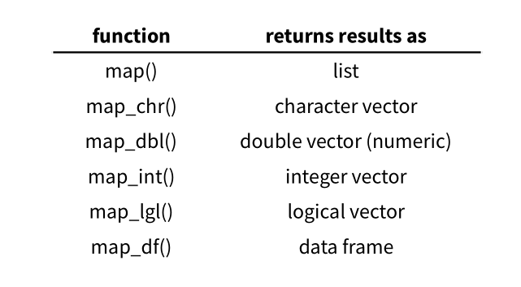

Chapter 10 Iteration

10.1 Code Duplication
Code duplication is tedious and hard to maintain and debug. Plus, there are obvious advantages for reducing code duplications. According to Wickham and Grolemund (2017) Chapter 21 Iteration, there are three main advantages of doing so:
- It’s easier to see the intent of your code, because your eyes are drawn to what’s different, not what stays the same.
- It’s easier to respond to changes in requirements. As your needs change, you only need to make changes in one place, rather than remembering to change every place that you copied-and-pasted the code.
- You’re likely to have fewer bugs because each line of code is used in more places.
There are in general two major ways to reduce duplication in coding:
- wrap the duplicate procedures into a function
- use iteration
This chapter would focus on the second strategy.In this chapter, we talk about code efficiency. In particular we will work on the library purr.
10.2 vector vs. list in R
Most of the R-internal functions are vectorized. By default, if we apply a function to a multi-element vector, R will automatically apply the same procedure to each element of the vector, and return the results of the same length.
## [1] 1.000000 1.414214 1.732051 2.000000 2.236068 2.449490 2.645751 2.828427
## [9] 3.000000 3.162278But this is NOT something we can do with a list:
## Error in sqrt(a.list): non-numeric argument to mathematical function10.3 Iteration
As we work with list and data.frame very often, it would great if we can have a easy way to apply the same procedure to:
- each element in the list
- each row in the data.frame
- each column in the data.frame
Let’s start with a scenario. We first create a pseudo data set, with students’ grades from five different classes.
exams.list <- list(
class1 = round(runif(30, 0, 100)), # 30 tokens of random numbers in the range <0, 100>
class2 = round(runif(30, 0, 100)),
class3 = round(runif(30, 0, 100)),
class4 = round(runif(30, 0, 100)),
class5 = round(runif(30, 0, 100))
)
exams.list## $class1
## [1] 27 46 85 99 94 31 15 56 17 60 47 48 10 4 21 68 10 94 92 97 0 83 17 51 8
## [26] 71 88 28 40 22
##
## $class2
## [1] 6 35 2 59 10 6 66 41 61 76 52 50 92 38 70 59 45 43 52 66 5 12 81 72 21
## [26] 80 54 38 49 76
##
## $class3
## [1] 50 53 25 35 83 38 49 7 52 95 24 84 37 63 37 82 78 95 91 53 86 3 32 22 95
## [26] 25 72 21 30 43
##
## $class4
## [1] 81 94 100 19 67 21 27 86 4 71 14 46 83 81 62 8 38 24 84
## [20] 53 14 38 31 35 70 45 17 31 26 53
##
## $class5
## [1] 50 65 38 23 39 50 96 96 96 28 46 39 71 3 80 82 58 2 7
## [20] 90 25 21 31 8 20 26 42 59 55 100If we like to compute the mean scores of each cluster, you probably want to use mean():
## [1] NAIt should be clear now that mean() expects a numeric vector, on which the mean score is computed.
So you may think that why don’t we use the dumb way:
set.seed(123) # Make sure we get the same results
exams.list.means <- list(
class1mean = mean(exams.list$class1),
class2mean = mean(exams.list$class2),
class3mean = mean(exams.list$class3),
class4mean = mean(exams.list$class4),
class5mean = mean(exams.list$class5)
)
exams.list.means## $class1mean
## [1] 47.63333
##
## $class2mean
## [1] 47.23333
##
## $class3mean
## [1] 52
##
## $class4mean
## [1] 47.43333
##
## $class5mean
## [1] 48.2The advantage is obvious: (a) what if you have 10 classes? 100 classes? (b) what if now you decide to compute standard deviation?
10.4 purr
## $class1
## [1] 47.63333
##
## $class2
## [1] 47.23333
##
## $class3
## [1] 52
##
## $class4
## [1] 47.43333
##
## $class5
## [1] 48.2With only one-line code, you have achieved your goal.
map() is a very powerful function to do iteration. Its usage is as follows:

To conceptualize this code map(exams.list, mean):
- For each element in the
exams.list, apply the functionmean- Do the first element, and save the result in the first elemenet of the new
list - Do the second element, and save the result in the second elemvent of the new
list - …
- After finishing all elements in the
exams.list, return the newlistresult
- Do the first element, and save the result in the first elemenet of the new
In purrr, by default map() returns results in a list format. You can specify a particular data structure you like by using other variants of the mapping function:

## class1 class2 class3 class4 class5
## 47.63333 47.23333 52.00000 47.43333 48.20000exam.list, and compute the median and standard deviation for each class.
- Median
## class1 class2 class3 class4 class5
## 46.5 51.0 49.5 41.5 44.0- Standard Deviation
## class1 class2 class3 class4 class5
## 32.61530 25.73430 28.00862 28.41404 30.0682010.5 Writing Own Functions
With the power and flexibility of purrr::map(), we can basically do everything iteratively. More attractively, we can apply a self-defined function as well!
First we create own self-defined function my_center:
- This function takes a vector object x
- Substract each element of x by the mean score of x
- return the resulting vector as the output of the function
Now we can apply our my_center function to each class in exams.list:
mtcars dataset (?mtcars for more detail). How to get the class type of each column in the mtcars?
## [1] -7.2000000 -2.1000000 -0.8981462 0.5692100 2.6385602exams.list in this chapter. For each class, please convert the student’s score to a z-score.
References
Wickham, Hadley, and Garrett Grolemund. 2017. R for Data Science: Import, Tidy, Transform, Visualize, and Model Data. 1st ed. O’Reilly Media, Inc.